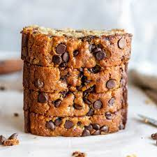

Recipes
Chocolate Chips

Chocolate chips are small chunks of sweetened chocolate, used as an ingredient in a number of desserts (notably chocolate chip cookies and muffins), in trail mix and less commonly in some breakfast foods such as pancakes. They are often manufactured as teardrop-shaped volumes with flat circular bases.
Ingredients
- 1 cup butter, softened
- 1 cup white sugar
- 1 cup packed brown sugar
- 2 eggs
- 2 teaspoons vanilla extract
- 1 teaspoon baking soda
- 2 teaspoons hot water
- 1/2 teaspoon salt
- 3 cups all-purpose flour
- 2 cups semisweet chocolate chips
- 1 cup chopped walnuts
Curry Chicken

Chicken curry is a globally cherished dish known for its aromatic blend of spices and tender chicken pieces simmered in a flavorful sauce.
Whether prepared in a coconut milk-based Thai curry, a rich and spicy Indian curry, or a comforting Jamaican jerk curry, the dish showcases
the versatility of flavors that can be achieved with this beloved culinary creation.
Ingredients
- Chicken pieces, cut into desired sizes (e.g., bone-in, boneless, thighs, or breast).
- Onion, finely chopped
- Garlic cloves, minced
- Ginger, grated or minced
- Fresh tomatoes, chopped
- Tomato puree
- Coconut milk (for a creamy texture)
- Chicken broth or stock
- Water
- Turmeric powder
- Coriander powder
- Cumin powder
- Red chili powder or paprika (for heat)
- Garam masala
- Salt, to taste
- Fresh cilantro or coriander leaves, chopped (for garnish)
- Vegetable oil, ghee (clarified butter), or coconut oil
- For a creamier texture, you can add yogurt or cream.
Recipe to Follow
- Collect all the necessary ingredients, including chicken pieces, vegetables, spices, herbs, and a base like tomatoes or coconut milk.
- Clean and marinate the chicken with spices and yogurt for added flavor. Chop vegetables and prepare any other ingredients required.
- In a pan, heat oil or ghee and sauté chopped onions until golden brown. Add garlic, ginger, and any other aromatic spices like cumin or cardamom.
- Add a mix of ground spices such as turmeric, coriander, cumin, and red chili powder. Toast the spices briefly to enhance their flavors.
- Add the marinated chicken to the pan and brown it on all sides. This helps seal in the juices and adds flavor.
- Pour in the liquid component, which can be tomatoes, tomato puree, coconut milk, or broth, depending on the type of curry.
- Allow the curry to simmer on low heat, letting the chicken cook through and absorb the flavors of the sauce. This may take around 20-30 minutes.
- Taste the curry and adjust the seasoning by adding salt, sugar, or more spices as needed.
- Add finishing touches like fresh herbs (coriander or cilantro), a squeeze of lime or lemon juice, or a dollop of yogurt to enhance the taste.
Chocolate Chip Banana Bread
- Cooking spray
- 2 cups (240 g) all-purpose flour
- 1 tsp. baking soda
- 1/2 tsp. kosher salt
- 1 large egg plus 1 egg yolk
- 1 cup (200 g) granulated sugar
- 1/2 cup (1 stick) unsalted butter, melted
- 1/4 cup sour cream
- 1 tsp. pure vanilla extract
- 3 ripe bananas, mashed
- 1/2 cup chopped toasted walnuts
- 1/2 cup semisweet chocolate chips